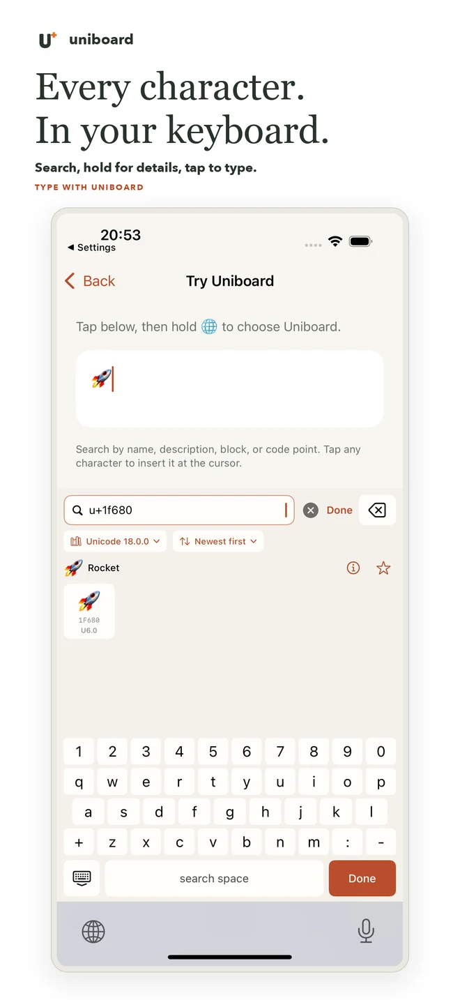
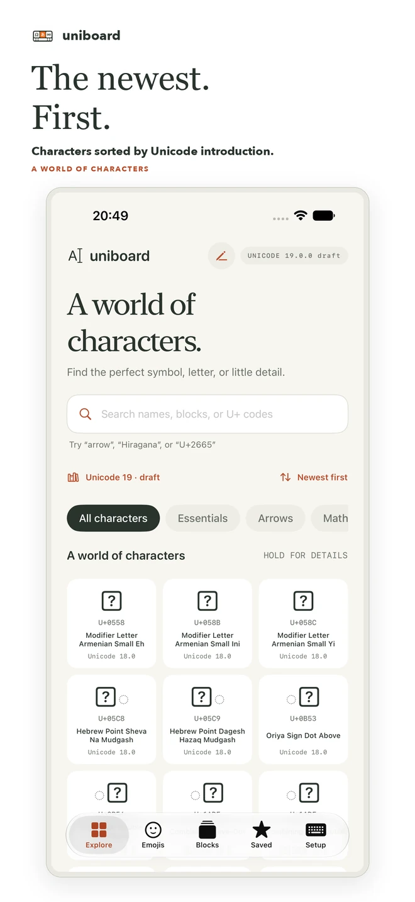
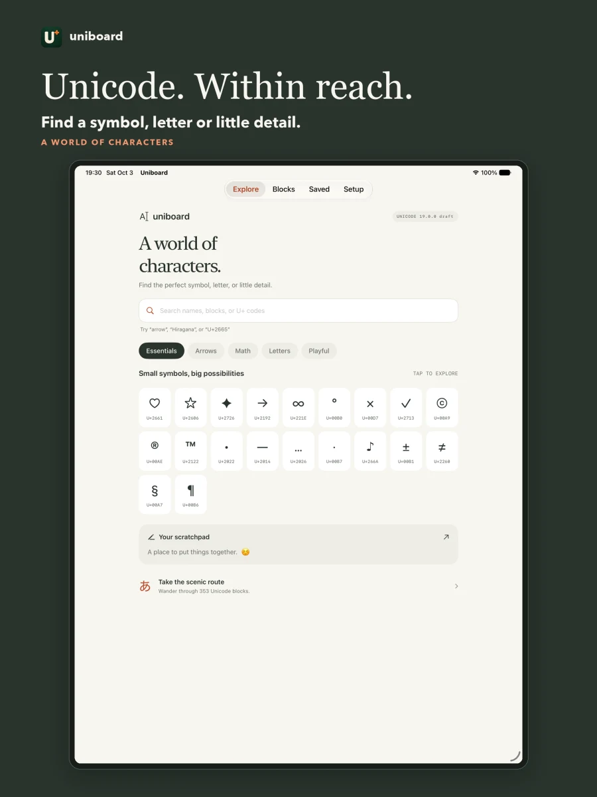

Type the real character.
Enable the Uniboard keyboard, search with its own keys, then tap a character to insert it at the cursor. Your search stays inside the keyboard.
Unicode keyboard · iPhone & iPad
That arrow. The right mathematical symbol. A letter you can’t find on your keyboard. Search for it, understand it, and put it into your words.
Find it your way
Search Unicode names, descriptions, aliases and block names. Enter a code point when you know it. Browse when you don’t.
U+1F680🚀infinity∞arrows↗ ↔ ↘Enable the Uniboard keyboard, search with its own keys, then tap a character to insert it at the cursor. Your search stays inside the keyboard.
See a character’s Unicode name, block, decimal value, UTF-8 bytes and descriptive annotations. Copy the exact scalar, including invisible characters.
Save favorites, revisit recent characters and collect text in the app’s scratchpad. Explore the full block list in paginated character grids.
From search to the cursor
Actual app screens on iPhone and iPad. The keyboard keeps the query to itself and inserts only the character you choose.



Small permissions. Big alphabet.
Search runs against a bundled database. Uniboard does not collect your searches or typing, does not need an account, and does not require keyboard Full Access. No ads. No analytics SDK.
Characters you insert into another app are handled by that app. Uniboard keeps its own favorites and recent characters locally on your device.
Read the privacy policyFor the curious, the precise, and the expressive
Write mathematical notation, find arrows and punctuation, inspect Latin or Greek letters, explore scripts, or check an exact code point while testing software.
Each new build uses the latest official Unicode development draft, with a monthly data refresh. Draft names and assignments can change; the fonts in your version of iOS determine which characters display.
A practical guide to Unicode searchA few useful answers
Open Settings → General → Keyboard → Keyboards → Add New Keyboard, then choose Uniboard. In a text field, hold the globe key and select Uniboard. Keep Full Access turned off; the keyboard works without it. See the setup guide.
Yes. Try U+1F680, 0x1F680 or 1F680 for 🚀. Explicit decimal search uses decimal:128640. Use U+FACE for a hexadecimal code point containing only letters.
No font contains every character. Your device may show a missing-glyph box for a character even though its code point is valid. New Unicode draft characters are especially likely to need newer fonts. Uniboard can still copy or insert the scalar.
iOS uses its system keyboard in password and phone-number fields, and some apps disable third-party keyboards. In other supported fields, switch with the globe key. You can also copy characters from the containing app.
The app interface and Unicode character names are in English. The catalog contains characters from many writing systems; inserting those characters does not require an English document.